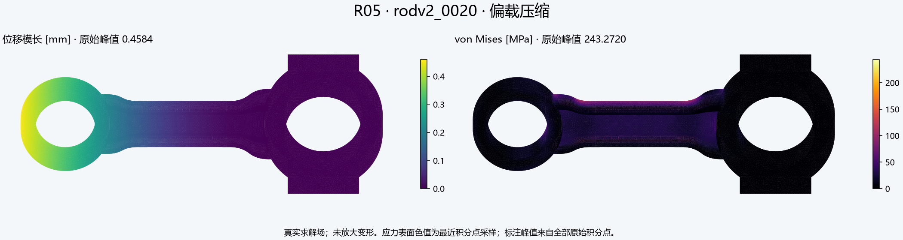
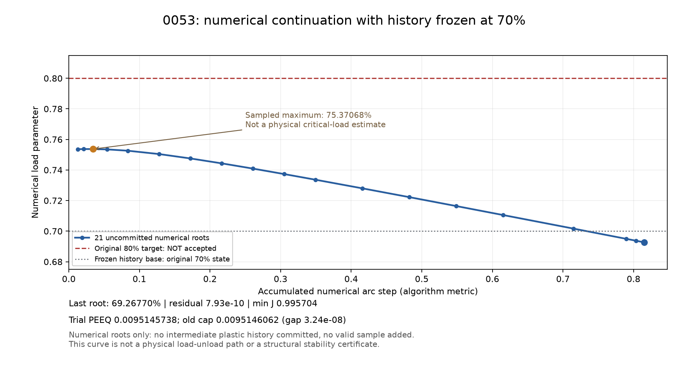
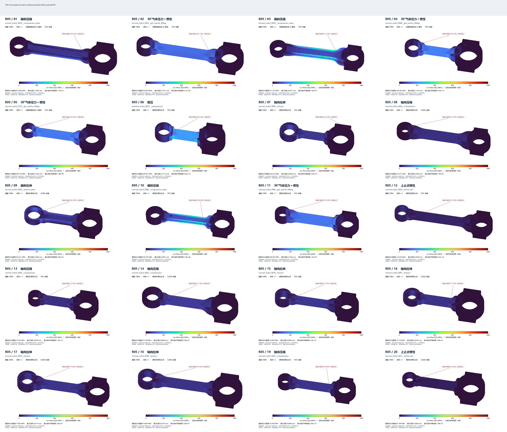

01
验收 / 总结 / 介绍
R05持续推进1000个有效样本；当前736例有效，其中完整J2塑性恢复11例，保留原样本、载荷与平衡门槛。

原始未变形几何；应力颜色为最近积分点表面采样，峰值采用全部原始积分点。六种载荷与失败对照见页尾详情。
R05持续推进1000个有效样本；当前736例有效，其中完整J2塑性恢复11例，保留原样本、载荷与平衡门槛。
原CG/GAMG失败已建立同输入CPU直接解对照；仅换FGMRES不足以恢复。GPU与CPU后端明确标记，资源不足等待，不计数值失败。
初期目标约 1000 个有效样本
初期目标约 1000 个有效样本
保存几何参数、mesh、工况和场数据，汇总有效/失败数量
尚未录入结果。首条交付后，链接固定保留在本页。
尚未录入；后续记录与每日更新一同追加。
已验证：原CG/GAMG失败案例在相同网格、载荷、本构和验收门槛下可由CPU直接求解恢复。 R04已在同网格40%平衡态检出一个约束切线负方向，不能将全部CG -10归为纯数值问题，CPU直接解平衡也不证明结构稳定。 同一0032初始状态，CPU和GPU的CG均在2次迭代后报-8，自由残差均约300.082859；因此此失败可在CPU重现，不能归咎于GPU硬件。单独换FGMRES仍未恢复，优先指向预条件器/迭代路径的稳健性，尚不能把网格质量判定为唯一根因。
| 样本 | 原失败码 | 恢复后端 | 耗时/s | 最大U/mm | 最大VM/MPa | 相对残差 |
|---|
当前配置：2个GPU求解进程＋1个CPU直接求解进程。CPU负责有限元装配；GPU执行迭代线性代数。配置可以在样本之间调整，无需丢弃在算结果。
| 配置 | 采样数 | 平均GPU占用 | 峰值GPU占用 | 峰值显存/MiB | 采样期间完成数 |
|---|---|---|---|---|---|
| 1 GPU + 1 CPU | 15 | 33.1 | 51.0 | 5983.0 | — |
| 2 GPU + 2 CPU | 120 | 69.7 | 83.0 | 12437.0 | 1 |
| 3 GPU + 2 CPU (trial only; user retained 2 GPU) | 120 | 79.1 | 85.0 | 17886.0 | 3 |
短时生产采样，样本不同，不代表同样本基准加速比。以有效样本吞吐量为调度目标，利用率与显存占用用于判断余量。
另一个CPU槽已预留给独立恢复任务：Validated numerical signed-mode initialization, original physical endpoint constraints。这只是两个CPU槽之间的分配，不增加GPU并发；恢复结束后自动归还主队列。
normal_rodv2_0053__compression_skew：触发屈服保护，需要完整J2塑性求解；不计入有效样本；normal_rodv2_0079__compression_skew：触发屈服保护，需要完整J2塑性求解；不计入有效样本；normal_rodv2_0096__gas_inertia_30deg：触发屈服保护，需要完整J2塑性求解；不计入有效样本；normal_rodv2_0154__compression_skew：触发屈服保护，需要完整J2塑性求解；不计入有效样本；normal_rodv2_0159__compression_skew：触发屈服保护，需要完整J2塑性求解；不计入有效样本
保持原E、ν与分段硬化曲线，新增有限应变J2返回映射；材料数据范围外仍拒绝。6条材料点历史共165个状态与原CalculiX incplas程序对照通过；DOLFINx四积分点应力、状态与自动切线通过独立差分核对。
弯曲TET10独立塑性加载/卸载20状态与已安装CCX 2.23对照：位移相对L2 2.141e-07，原始积分点应力相对L2 1.048e-07，PEEQ绝对差 4.860e-12；PEEQ峰值 8.967564e-05，确认测试确实进入塑性。
针对新出现的非有限牛顿试探，加入保持原载荷目标与冻结历史的回溯步长控制，要求试探变形梯度为正且残差下降；相同20状态塑性加载/卸载回归仍通过。原失败尝试另存，不覆盖。
0053的单调回溯版本在60%目标达到80次迭代上限，未计有效数；其步长被残差单调条件压至1/64附近。另行验证优先完整牛顿步、只对非有限量或J≤0的试探回溯的策略：20状态塑性基准通过；同网格0028完整十状态弹性杆回归中，位移相对L2 2.726e-12，原始积分点应力 1.959e-12。最终仍执行原平衡、有限性、屈服一致性及材料范围验收，不能以减载或放宽门槛替代。
进一步区分弹性与塑性试探：弹性试探保留完整牛顿步，进入塑性后要求残差下降，同时保留有限性及J正值检查。独立20状态塑性基准和0028完整十状态杆回归均已通过；0053实际恢复结果单独验收。
数值载荷延续已通过独立塑性与完整杆回归：中间根只用作初值，塑性历史始终冻结在上一个原始目标，仅原来的十个目标可以提交。塑性基准强制增加至少20个中间根，仍与原CCX的20个原目标状态吻合；这些中间点不计样本、不改变最终满载或验收门槛。
自适应延续步长版本不再于每个小步成功后立即跳回原目标，而按最近成功步长的1.5倍增长、在失败时二分。已强制至少40个不提交历史的中间根完成20个原塑性目标对照，并通过0028整杆回归；仍保留原目标、材料及残差门槛。
0053预屈服检查，仅针对70%已接受快照：重新装配自由残差 3.852e-10；约束切线额外负方向 0，零主元 0。该检查不计样本，不能证明80%塑性目标或满载存在／不存在平衡解。
近零切线特征值 [N/mm]：7.631026e-04, 3.339596e-02, 5.670108e-02, 1.689491e-01, 1.592193e+00, 1.682939e+00。采用约化位移欧氏范数，并非临界载荷或振动频率。
最软模态的原生节点位移分量平方和中，厚度z方向占 98.56%，特征相对残差 3.956e-07；这提示需要关注屈服后厚度弯曲方向的切线变化，尚未证明80%目标发生失稳或不存在平衡。
另在未提交的73.3655%数值根处，使用冻结于70%的旧材料状态重装J2端点方程，自由残差 4.492e-10，试探PEEQ峰值 2.630373e-04（未超材料范围）。算法切线有非对称分量，采用奇异值分析：最小奇异值 6.200830e-04 N/mm，估计条件数 4.397e+10，奇异三元组相对残差 4.743e-07，软位移方向z分量平方和占 98.07%。这揭示数值病态；奇异值没有正负稳定性含义，本点也不是已接受的物理塑性状态，更不能计入有效样本。
曲线预测版本已通过强制中间根的塑性与整杆回归：仅在同一冻结历史的内部延续中，用最近两到三个平衡根构造初值；检查J正值、材料范围和预测残差，不提交中间塑性历史。原十个载荷目标和验收门槛保持一致。
切线预测—校正版本的最终源码已锁定并重新通过塑性、整杆两项回归；首步允许受控切线预测，随后要求残差单调下降。内部数值根使用更严的2×10⁻⁹门槛，原十个物理目标仍按2×10⁻⁷验收，次数限制及材料范围不变。只有完整原目标路径通过后才计有效样本。
0095气体惯性工况原先因材料范围被拒收；0096原先属于牛顿试探步不可接受，后续数值延续也未通过，二者分类不同。原CCX incplas源码在硬化表末点之后令应力保持958.2434MPa、硬化斜率为零。已独立核对4条历史共628个材料点状态（含553个越过末点状态），与原Fortran应力相对差小于3×10⁻¹²；4个尾段积分点/自动切线检查亦通过。原失败全部保留，不计有效数。
尾段又通过独立曲边TET10装配复核：非仿射加载、卸载及反向加载下，DOLFINx节点反力对原Fortran材料状态的手工积分相对差小于9×10⁻¹⁴，全节点自动切线对独立差分相对差小于5.2×10⁻¹⁰，测试PEEQ至0.114。此项为给定位移的反力／切线验证，不是生产样本。另有独立尾段版本保留PEEQ≤0.1的有界拒收保护，原四点硬化曲线、材料参数与原始载荷目标保持不变。
有界尾段最终源码已再通过CCX20状态塑性循环（位移相对2.14×10⁻⁷、PEEQ差4.86×10⁻¹²）及0028整杆回归（位移相对2.73×10⁻¹²）。只有匹配不可变验证清单、源码和核心哈希的独立版本才可采用PEEQ≤0.1，其余版本仍按原表末范围验收。有界恢复已启用；主队列加载条件合同并逐例核验后才计数。该尾段遵循原CCX常值延续规则，不是新增实验断裂／损伤标定，也不代表结构稳定性认证。
0096另行定位：未提交的49.94629%数值根重装相对残差1.13e-10，试探PEEQ=0。约束数值算子的最小奇异值约1.83e-06 N/mm、条件数约1.27e+13，软方向原生位移分量平方和中z占99.38%。此处仍未进入塑性，不能照搬0095的材料范围原因；存在非常软的厚度弯曲方向，需考虑分支与数值延续。奇异值没有负方向含义，也不能据此断言50%无平衡或给出临界载荷；该中间根不计有效结果。
缓存初值版本已锁定源码及缓存模块哈希，并通过两项回归：独立CCX20物理状态循环（冷跑包含40个不提交历史中间根；回放实际使用20个原目标初值及9个重新验算的数值根），以及0028整杆。整杆刻意扰动一个缓存节点位移后，原方程用2次牛顿迭代纠正，表明缓存没有被直接当结果；错误载荷身份和被改动缓存的拒收检查也通过。所有物理历史仍按原目标顺序重算，35次牛顿、48次延续及1800秒预算不变。当前仅用于原先超时的0053/0079；0096曾耗尽延续区间，不重复同源重试。
0053前70%原目标的重复工作：旧PC记录1122.1秒，本轮作为初值复用后重装平衡、约束与本构验收用2.51秒。此为已完成前缀的重复工作缩减，不是整体求解器加速倍数；80%及满载仍须另行求解，未因此增加有效计数。
0053省去前段重算后仍耗尽48次延续尝试，正式80%目标未通过，不能继续只靠增加时间。下一候选采用已诊断软方向的确定性正负位移初值，始终求解原方程、原约束和原载荷目标；不把该方向加入边界条件，也不导入缓存材料历史。最终源码的强制种子塑性／整杆回归已通过，正在按原验收规则试恢复；分支选择不代表唯一或稳定。
0096软方向初值试验已结束：0及±0.05、±0.25、±1、±5 mm共9个猜值在50%原目标均出现牛顿停滞，随后数值延续区间耗尽，未增加有效数。这只排除了本轮有限初值与算法组合；不能推断50%无平衡、材料域不足或结构已失稳。
后续数值伪弧长候选在冻结的旧材料历史下，把内部载荷参数也作为未知量，并用数值路径平面跟踪平衡分支；回到精确原载荷目标并通过原验收后才提交历史。局部修正距离限制避免纠正到过远根。精确候选算法的解析折点测试已实际得到19个数值根，跨越载荷反向，最大残差8.19e-10；此项使用SciPy模拟线性求解，不是FEniCSx验证或生产样本。最终源码已通过强制实际使用弧长步骤的独立塑性循环与整杆回归，方可用于剩余难例。35次牛顿／48次尝试／单例1800秒的限额及原物理目标、残差和材料域保持不变；不宣称分支唯一或稳定。
弧长原版实际覆盖60个不提交历史的塑性数值根与20个CCX原目标；最终位移相对2.09e-07、应力相对1.03e-07、PEEQ差2.06e-12。0028整杆强制经过3个弧长数值根，满载位移相对2.73×10⁻¹²。验证只证明这些对照中的算法与原物理目标相容，不能保证所有疑难样本成功。
0096的弧长原版从重新核验的49.946289%数值根出发，9次弧步从0.05缩到0.0001953125，均未校正取得新根，因弧步下限退出；未接受原50%目标。它使用从旧物理目标到数值根的割线方向，不能假定该平均方向在极软前沿仍是局部切向。
0053的弧长原版取得21个不提交历史的数值根：采样载荷参数先至约75.3707%，随后反向降到69.2677%，仍未接受原80%目标。最后根在冻结70%旧历史下独立重装残差7.93e-10、最小J=0.995704、试探PEEQ=0.0095145738，距原表末上限仅3.24e-08。本次局部求值没有全局线性求解，也未增加样本数；这提示路径转向及原材料域边界都需区分。尚未保存最后被拒预测的各门槛，不能把其失败直接改写成已证实的材料域错误。新候选将逐项记录被拒试探的有限性、J和PEEQ。

独立后续版本改为在当前根上求解增广约束算法切线的零空间方向，记录切线方程后向误差、均值方向约束，以及旧割线／新切向的线性平衡缺陷；同时预测原均值约束的乘子。原版源码与报告完整保留。最终源码已通过强制实际使用此方向的塑性循环和整杆两门，才按原满载验收规则恢复难例。这是数值路径方向检查，不是结构稳定性或分支唯一性认证；材料、十个物理目标与全部验收门槛保持不变。
0096的实测方向改进：在约49.99856%根，同一算法尺度下旧割线的线性自由残差缺陷约21.39，新切向约1.33e-10，后向误差7.91e-19。该对照记录取得约50.01531%的数值根，但当时回到精确50%原目标的校正未通过，不能据此计数。该对照支持局部方向有改进，不能当作结构稳定性或全局收敛证明。
交点细化候选只针对“已经跨过原目标、但原载荷校正失败”的证据：先用两端根的位移插值作原目标初值；必要时回到上一个数值根并缩分该交点区间，直到参数足够接近目标，再按精确原载荷重装验收。交点细化中的更小数值弧步仍消耗同一48次尝试预算，不放宽残差、材料域或35次牛顿／1800秒限额。最终源码已通过强制实际交点细化的独立塑性与整杆两门后，才可恢复符合上述证据的难例。没有交点校正失败证据的病例不盲目重复；明确材料域问题须另用独立验证及兼容合同的有界尾段版本。
新切向版本已进一步记录确切拒收门槛：0053后期试探PEEQ=0.0095152166、J≈0.995704；0096后期试探PEEQ=0.0095153618、J≈0.993926，场均有限，但PEEQ超过原域上限0.0095146062，故被材料域保护拒收。原始弧步耗尽错误不改，另存诊断分类。此结论只针对该轮后期数值试探，不能外推所有早期CG／牛顿失败。0096此前已跨过50%，应先细化原目标交点；0053未跨过80%，需要独立验证及兼容验收合同的有界尾段数值版本，不能复用03a的来源标志或直接删保护。
独立arc_tail_v2版本将已验证的真切向／交点细化算法与原CCX恒定尾段配套，仅扩展数值／提交PEEQ域至0.1；原四点曲线、R/K、物理目标与全部平衡／正J／屈服一致性门槛保持不变。最终源码的五门均已通过：原材料点／UFL／曲边装配三门按不可变哈希复用，新源码另外强制通过塑性循环和整杆两门。旧03a源码及8ae4清单保留，新版本有独立来源、模块、五门与清单哈希校验，不能互借flag。
新有界版本对CCX20原状态的最大位移相对误差8.03e-07、PEEQ绝对差7.86e-11；实际经过74个不提交历史的数值根。0028整杆位移相对2.73×10⁻¹²，强制交点细化已覆盖。
兼容检查已重验旧0095完整场与来源，原清单哈希不变；错误域上限、清单、源码、未注册profile及错配来源的拒收检查均通过。这些合同测试不计样本。
主队列新合同：尚未加载，须在当前样本完成后安全维护加载；新profile隔离待验收结果0个。隔离结果只有经主队列重新验证后才进入有效数；有界版本不是结构稳定性或实验断裂／损伤认证。
新出现的0154／0159等仅有基线失败记录的病例已排在同一CPU槽后，先用已验证的标准材料域延续方法，不先放宽域；只有明确记录材料域拒收后，才允许同槽顺序转独立有界版本。同一源码已失败的配置不重复派发。
独立模式幅值数值方法已验证：把本ID的模式幅值作为临时路径条件、载荷参数作为未知量，寻找正负分支；原物理目标处撤去数值模式行，仍按原R/K、原约束、精确原载荷验收。完美／不完美分岔解析例的两种符号均通过；原生塑性循环实际经过230个数值根，20个原目标均撤去模式行，位移最大相对2.14e-07、PEEQ差4.82e-12。0028整杆强制经过9根，满载U相对2.73×10⁻¹²。仍为原PEEQ域0.0095146062，不借用任何有界尾段flag；中间历史不提交，分支不保证唯一或稳定。
另有一次调度兼容错误：旧版来源记录缺少solver_module字段，使新病例筛选中断。已保留错误日志并修复，未知来源会保守排除，未尝试的0154／0159等重新排在同一CPU槽后；该错误不是数值求解失败，主队列未中断。
0053偏载压缩：原CPU与GPU弹性算法均在80%目标触发屈服保护。此前七个已接受状态的最大VM差仅 2.111e-06 MPa，最小J差 8.921e-12。这是标量路径核对，并非完整场对照；本例不能归为GPU硬件故障。
| 样本 | 恢复方法 | 状态 | 最后接受载荷 | 在算/失败目标 | 原因 |
|---|---|---|---|---|---|
| normal_rodv2_0033__compression_skew | 初始完整J2牛顿（历史版本） | verified_pending_main_queue_merge | 1.0 | — | — |
| normal_rodv2_0033__gas_inertia_30deg | 初始完整J2牛顿（历史版本） | verified_pending_main_queue_merge | 1.0 | — | — |
| normal_rodv2_0053__compression_skew | 初始完整J2牛顿（历史版本） | failed | 0.7 | 0.8 | RuntimeError('PETSc MUMPS factorization/solve failed') |
| normal_rodv2_0053__compression_skew | 全程残差单调回溯 | failed | 0.5 | 0.6 | RuntimeError('Newton iteration limit; no unconverged label exported') |
| normal_rodv2_0058__compression_skew | 全程残差单调回溯 | verified_pending_main_queue_merge | 1.0 | — | — |
| normal_rodv2_0053__compression_skew | 优先完整牛顿步／有限试探回溯 | failed | 0.7 | 0.8 | RuntimeError('Newton step not admissible; no fallback physics') |
| normal_rodv2_0053__compression_skew | 弹性全步／塑性残差回溯 | failed | 0.7 | 0.8 | RuntimeError('Newton iteration limit; no unconverged label exported') |
| normal_rodv2_0053__compression_skew | 冻结历史的数值载荷延续 | time_bound | 0.7 | 0.7273186978712147 | 1800-second controller recovery budget reached; no complete target result, not a proof of no physical equilibrium |
| normal_rodv2_0053__compression_skew | 冻结历史／自适应延续步长 | failed | 0.7 | 0.7342573068875965 | RuntimeError('Numerical continuation attempt limit; no original target label exported') |
| normal_rodv2_0079__compression_skew | 优先完整牛顿步／有限试探回溯 | failed | 0.9 | 1.0 | RuntimeError('Newton step not admissible; no fallback physics') |
| normal_rodv2_0079__compression_skew | 冻结历史／自适应延续步长 | failed | 0.9 | 0.9322446951143273 | RuntimeError('Numerical continuation attempt limit; no original target label exported') |
| normal_rodv2_0053__compression_skew | 冻结历史／曲线预测初值 | failed | 0.7 | 0.7408906729085204 | RuntimeError('Numerical continuation attempt limit; no original target label exported') |
| normal_rodv2_0079__compression_skew | 冻结历史／曲线预测初值 | failed | 0.9 | 0.938698172622638 | RuntimeError('Numerical continuation attempt limit; no original target label exported') |
| normal_rodv2_0094__gas_inertia_30deg | 优先完整牛顿步／有限试探回溯 | verified_pending_main_queue_merge | 1.0 | — | — |
| normal_rodv2_0095__gas_inertia_30deg | 优先完整牛顿步／有限试探回溯 | failed | 0.7 | 0.8 | RuntimeError('Plastic strain exceeds frozen material data range') |
| normal_rodv2_0096__gas_inertia_30deg | 优先完整牛顿步／有限试探回溯 | failed | 0.5 | 0.6 | RuntimeError('Newton step not admissible; no fallback physics') |
| normal_rodv2_0053__compression_skew | 冻结历史／切线预测及单调校正 | time_bound | 0.7 | 0.725116789340974 | 1800-second recovery attempt budget reached; not a proof of no equilibrium |
| normal_rodv2_0102__gas_inertia_30deg | 优先完整牛顿步／有限试探回溯 | verified_pending_main_queue_merge | 1.0 | — | — |
| normal_rodv2_0079__compression_skew | 冻结历史／切线预测及单调校正 | time_bound | 0.9 | 0.9509462992280515 | 1800-second recovery attempt budget reached; not a proof of no equilibrium |
| normal_rodv2_0096__gas_inertia_30deg | 冻结历史／切线预测及单调校正 | failed | 0.4 | 0.4994903564453124 | RuntimeError('Numerical continuation interval exhausted; original target not accepted') |
| normal_rodv2_0095__gas_inertia_30deg | 原CCX恒定尾段／PEEQ≤0.1有界验收 | verified_pending_tail_contract_reload | 1.0 | — | — |
| normal_rodv2_0053__compression_skew | 原目标与数值根仅作初值复用／冻结物理历史 | failed | 0.7 | 0.7523085110675907 | RuntimeError('Numerical continuation attempt limit; no original target label exported') |
| normal_rodv2_0079__compression_skew | 原目标与数值根仅作初值复用／冻结物理历史 | failed | 0.9 | 0.9529017356555827 | RuntimeError('Numerical continuation interval exhausted; original target not accepted') |
| normal_rodv2_0096__gas_inertia_30deg | 软方向确定性初始猜值／原方程与约束不变 | failed | 0.4 | 0.4994903564453124 | RuntimeError('Numerical continuation interval exhausted; original target not accepted') |
| normal_rodv2_0053__compression_skew | 软方向确定性初始猜值／原方程与约束不变 | failed | 0.7 | 0.75329889974145 | RuntimeError('Numerical continuation interval exhausted; original target not accepted') |
| normal_rodv2_0147__gas_inertia_30deg | 优先完整牛顿步／有限试探回溯 | verified_pending_main_queue_merge | 1.0 | — | — |
| normal_rodv2_0148__gas_inertia_30deg | 优先完整牛顿步／有限试探回溯 | verified_pending_main_queue_merge | 1.0 | — | — |
| normal_rodv2_0096__gas_inertia_30deg | 冻结历史／数值伪弧长及原载荷目标纠正 | failed | 0.4 | 0.5 | RuntimeError('Numerical arc step exhausted; original target not accepted') |
| normal_rodv2_0053__compression_skew | 冻结历史／数值伪弧长及原载荷目标纠正 | failed | 0.7 | 0.8 | RuntimeError('Numerical arc step exhausted; original target not accepted') |
| normal_rodv2_0079__compression_skew | 冻结历史／数值伪弧长及原载荷目标纠正 | failed | 0.9 | 1.0 | RuntimeError('Numerical arc step exhausted; original target not accepted') |
| normal_rodv2_0154__compression_skew | 优先完整牛顿步／有限试探回溯 | failed | 0.9 | 1.0 | RuntimeError('Newton step not admissible; no fallback physics') |
| normal_rodv2_0096__gas_inertia_30deg | 冻结历史／约束算法切线预测的数值伪弧长 | failed | 0.4 | 0.5 | RuntimeError('Numerical arc step exhausted; original target not accepted') |
| normal_rodv2_0053__compression_skew | 冻结历史／约束算法切线预测的数值伪弧长 | failed | 0.7 | 0.8 | RuntimeError('Numerical arc step exhausted; original target not accepted') |
| normal_rodv2_0079__compression_skew | 冻结历史／约束算法切线预测的数值伪弧长 | failed | 0.9 | 1.0 | RuntimeError('Numerical arc step exhausted; original target not accepted') |
| normal_rodv2_0159__compression_skew | 优先完整牛顿步／有限试探回溯 | failed | 0.9 | 1.0 | RuntimeError('Newton step not admissible; no fallback physics') |
| normal_rodv2_0096__gas_inertia_30deg | 冻结历史／真切向弧长与原载荷交点细化 | failed | 0.5 | 0.6 | RuntimeError('Numerical arc step exhausted; original target not accepted') |
| normal_rodv2_0053__compression_skew | 原CCX有界尾段／真切向弧长与交点细化 | failed | 0.7 | 0.8 | RuntimeError('Numerical arc step exhausted; original target not accepted') |
| normal_rodv2_0079__compression_skew | 原CCX有界尾段／真切向弧长与交点细化 | failed | 0.9 | 1.0 | RuntimeError('Numerical arc step exhausted; original target not accepted') |
| normal_rodv2_0170__tension_skew | 优先完整牛顿步／有限试探回溯 | verified_pending_main_queue_merge | 1.0 | — | — |
| normal_rodv2_0170__compression_skew | 优先完整牛顿步／有限试探回溯 | verified_pending_main_queue_merge | 1.0 | — | — |
| normal_rodv2_0096__gas_inertia_30deg | 原CCX有界尾段／真切向弧长与交点细化 | failed | 0.5 | 0.6 | RuntimeError('Numerical arc step exhausted; original target not accepted') |
| normal_rodv2_0170__gas_inertia_30deg | 优先完整牛顿步／有限试探回溯 | failed | 0.9 | 1.0 | RuntimeError('Plastic strain exceeds frozen material data range') |
| normal_rodv2_0170__gas_inertia_30deg | 原CCX恒定尾段／PEEQ≤0.1有界验收 | verified_pending_tail_contract_reload | 1.0 | — | — |
| normal_rodv2_0053__compression_skew | 数值模态幅值平面／原载荷端点撤去数值行 | failed | 0.7 | 0.8 | RuntimeError('Numerical signed-mode attempt budget or amplitude list exhausted; no original target accepted') |
| normal_rodv2_0096__gas_inertia_30deg | 数值模态幅值平面／原载荷端点撤去数值行 | failed | 0.5 | 0.6 | RuntimeError('Numerical signed-mode attempt budget or amplitude list exhausted; no original target accepted') |
| normal_rodv2_0079__compression_skew | 数值模态幅值平面／原载荷端点撤去数值行 | running | 0.9 | 1.0 | — |
失败尝试均保留且不计有效数；迭代失败尚不能证明该载荷不存在物理平衡解，仍需区分数值恢复与平衡分支问题。
normal_rodv2_0033__compression_skew：原输入与完整加载验收通过，已计入有效结果；normal_rodv2_0033__gas_inertia_30deg：原输入与完整加载验收通过，已计入有效结果；normal_rodv2_0053__compression_skew：本次恢复失败，未计数；normal_rodv2_0058__compression_skew：原输入与完整加载验收通过，已计入有效结果；normal_rodv2_0079__compression_skew：正在求解；normal_rodv2_0094__gas_inertia_30deg：原输入与完整加载验收通过，已计入有效结果；normal_rodv2_0095__gas_inertia_30deg：原输入与完整加载验收通过，已计入有效结果；normal_rodv2_0096__gas_inertia_30deg：本次恢复失败，未计数；normal_rodv2_0102__gas_inertia_30deg：原输入与完整加载验收通过，已计入有效结果；normal_rodv2_0147__gas_inertia_30deg：原输入与完整加载验收通过，已计入有效结果；normal_rodv2_0148__gas_inertia_30deg：原输入与完整加载验收通过，已计入有效结果；normal_rodv2_0154__compression_skew：本次恢复失败，未计数；normal_rodv2_0159__compression_skew：本次恢复失败，未计数；normal_rodv2_0170__compression_skew：原输入与完整加载验收通过，已计入有效结果；normal_rodv2_0170__gas_inertia_30deg：原输入与完整加载验收通过，已计入有效结果；normal_rodv2_0170__tension_skew：原输入与完整加载验收通过，已计入有效结果
独立小单元基准不属于1000个样本；目标样本恢复结果通过原节点、载荷、平衡、材料范围验证并合入主队列后才计数。原弹性屈服保护保留；塑性恢复改用已验证的完整J2屈服一致性验收，材料参数与硬化曲线不变。有效结果尚未逐例完成结构稳定性验收。
原网格、原支持与峰值平衡态；仅检查PEEQ=0的弹性样本。对称约束增广切线用MUMPS分解取惯性，扣除两个独立均值约束固有的两个负方向。该标签不改变冻结的有效样本计数。
normal_rodv2_0028__compression：该峰值切线未检出负方向；额外负方向 0；零主元 0
normal_rodv2_0028__compression_skew：该峰值切线未检出负方向；额外负方向 0；零主元 0
抽查不能外推至全部样本；未评估者在CSV中明确记为not_assessed。存在负方向的场仅适用于该数学平衡支路，不能直接标作稳定承载解；本检查不推断临界载荷或后屈曲分支。
| 样本 | 方法 | 路径 | 结果 | 耗时/s | 错误/备注 |
|---|
CG -3为1200次迭代耗尽，-8为预条件器非正定，-10为算子非正定，-11为预条件器失败。单独改FGMRES仍失败；平滑聚合方案在本机触发cuSPARSE资源不足，未用于生产。CPU直接解保持相同输入与物理方程，结果明确标记CPU后端。
旧调度器把资源暂时不足的未启动样本记成失败；恢复队列将它们作为待启动处理。成功数只统计1000个固定ID中通过完整10状态、有限性、身份和残差验证的结果。原弹性屈服保护保留；塑性恢复使用独立验证的完整J2本构与屈服一致性验收。生产样本当前无卸载或残余变形结论；平衡通过不等于稳定性通过。
六工况云图 · 有效结果CSV · 完整进度与对照JSON · PETSc失败码
20个已验收原ID，包含5个完整J2塑性结果；统一0–1000MPa、载荷100%、变形×1。表面颜色为显示平均，原始积分点峰值另列。

正在读取记录…